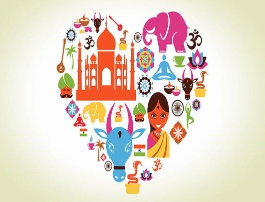

Diversity
India is a land of multiple religions. Apart from the tribal societies, many of whom still live in the pre-religious state of animism and magic, the Indian
population consists of the Hindus (82.41%), Muslims (11.6%), Christians (2.32%), Sikhs (1.99%), Buddhists (0.77%) and Jains
(0.41%). The Hindus themselves are divided into several sects such as Vaishnavas, Shaivates, Shaktas, Smartas etc. Similarly,
the Muslims are divided into sects such as Shias, Sunnis, Ahmadiyas etc.
